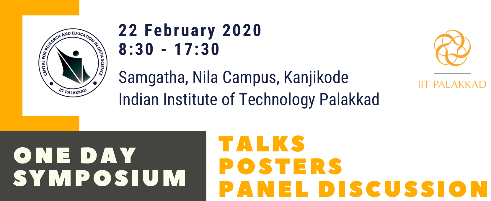

|
|

|
|---|
The Inaugural Symposium on Data Science

The Good, the Bad, and the Ugly Shades of Data Science
External Speakers
- Prof. Niloy Ganguly , IIT Kharagpur
- Prof. Chiranjib Bhattacharyya, IISc Bangalore
- Dr. Nandakishore Kambhatla, Sr. Director Adobe Research India
- Prof. Balaraman Ravindran, IIT Madras
- Mr. E.S.Padmakumar, Deputy Director VSSC Trivandrum
- Dr. Raman Sankaran, Senior Applied Research Scientist LinkedIn
Panel Discussion
- Prof. Niloy Ganguly, IIT Kharagpur
- Prof. Chiranjib Bhattacharyya, IISc Bangalore
- Dr. Nandakishore Kambhatla, Sr. Director Adobe Research India
- Prof. Balaraman Ravindran, IIT Madras
- Dr. Lakshmi Narasimhan, EE, IIT Palakkad
- Dr. Vivek Chaturvedi, CSE, IIT Palakkad
Tentative Program
| Time | Speaker | Title |
|---|---|---|
| 08.30 - 09.00 | Registration | |
| 09.00 - 09:10 | Prof. Sunil, Director IIT Palakkad | Inauguration Speech |
| 09:10 - 09:15 | Prof. K L Sebastian, Dean Academic Research IIT Palakkad | Prize distribution |
| 09:15 - 09:20 | Prof. K.V. Govindan Kutty, Dean Student Affairs IIT Palakkad | Launching of M.Tech in Data Science promo video |
| 09:30- 09:45 | Dr. Sahely Bhdra, IIT Palakkad | Introduction of CREDS |
| 09.45 - 10.30 | Poster & Demo with Tea | |
| 10:30 - 11.00 | Prof. Niloy Ganguly , IIT Kharagpur | Ensuring Fairness in Two Sided Markets |
| 11.00 - 11.30 | Prof. Chiranjib Bhattacharyya, IISc Bangalore |
Flying UAVs on the Edge |
| 11.30 - 11.50 | Dr. Mrinal Das, IIT Palakkad | Discovering Fashion Interests using Bayesian Models |
| 11.50 - 12.10 | Dr. M. Ashok Kumar, IIT Palakkad | A Glimpse of Robust Inference |
| 12:10 - 12:30 | Dr. Chandra Shekar Lakshminarayanan, IIT Palakkad | AI for Education |
| 12.30 - 13.00 | Dr. Nandakishore Kambhatla, Sr. Director Adobe Research India | AI for the Enterprise Customer: Leveraging Data and Content for Affect Modeling |
| 13:00 - 14:00 | Lunch (a quick photo session before lunch) | |
| 14.00 - 14.30 | Prof. Ravindran, IIT Madras | Challenges of doing Interdisciplinary Research |
| 14:30 - 15:00 | Mr. E.S.Padmakumar, Deputy Director VSSC Trivandrum | AI & Space |
| 15.00 - 15.20 | Dr. Satyajit Das, IIT Palakkad | TRANSPIRE: An energy-efficient TRANSprecision floating-point Programmable archItectuRE for near sensor data analytics |
| 15.20 - 15.50 | Dr. Raman Sankaran, Senior Applied Research Scientist LinkedIn | AI applications at LinkedIn: A brief overview |
| 15.50 - 16.20 | Coffee Break | |
| 16.20 - 16:40 | Industry interaction | |
| 16.45 - 18.00 | Panel Discussion Prof. Chiranjib, Prof. Ravindran, Prof. Niloy, Dr. Nandakishor, Dr. Lakshmi Narasimhan, Dr. Vivek | |